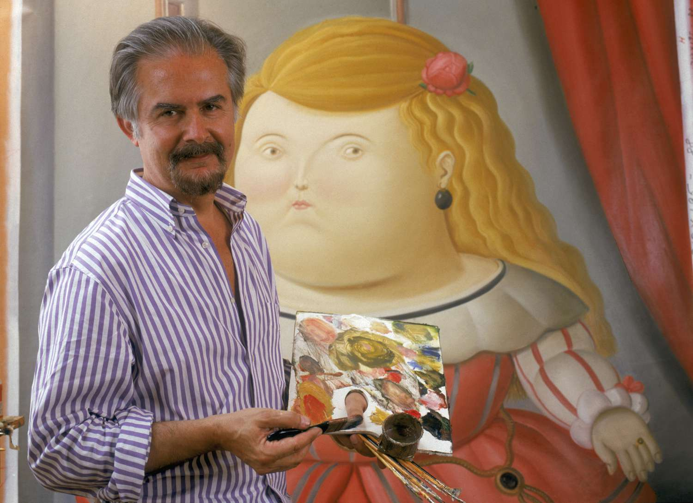

Botero
Home Gallery About ContactAbout Fernando Botero

Fernando Botero Angulo was a Colombian figurative artist and sculptor. He was born April 19th, 1932 in Medellin, Colombia. His signature style, also known as "Boterismo", depicts people and figures in large, exaggerated volume, which can represent political criticism or humor, depending on the piece.